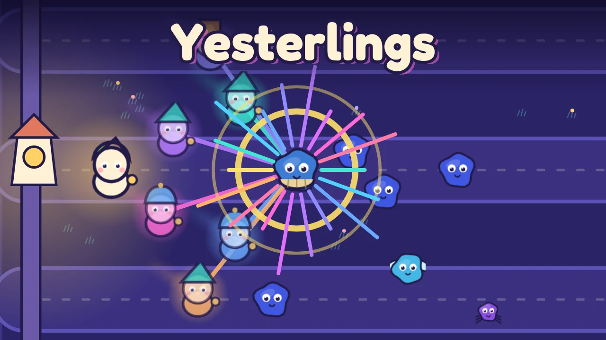

Yesterlings
Tower defense where your towers are you: every wave you play comes back as a glowing Yesterling that replays your moves beside you.
Yesterlings is a tower defense game with a time-loop twist: you do not build towers, you become them. Murklings creep down three lanes toward the Hearthlight, the little lantern that keeps the dusk away. You walk your hero around the field with one finger and fight whatever comes close. When the wave ends, your run turns into a Yesterling, a chalk-glow copy of you that replays every step you took and fights beside you in the next wave.
So every wave is two things at once: a fight you have to win now and a recording you will lean on later. Hold the left lane this wave and it is guarded for the rest of the level. Sweep the middle and your echo sweeps it again. Up to six Yesterlings play together, and when three or more of you hit the same foe at once you trigger a Chorus, a burst of light that hurts everything nearby, earns Glimmers and adds a note to the music, which grows a layer for every echo on the field.
Between waves you see the next wave's forecast and spend Glimmers on your shelf of echoes. Keep one so it never fades, Polish it to make it stronger, light a Beacon so echoes nearby swing faster, or Retake one you are not happy with. Eight kinds of foe keep you thinking: quick Skitters, armoured Puffshells, Driftwings that hop lanes, Hushers that silence echoes, Splitlets that burst in two, hulking Lumberbulks and the Fogmother boss every fifth level.
Twenty levels across four regions, from Dusk Meadow to Starfall Steps, each with three stars: protect the Hearthlight, keep most of your hearts, and meet the level's own goal. Unlock four heroes as you go, Brightblade, Sparkbow, Frostbell and Mendlamp, each with its own reach and ability, and spend Lantern Oil from your stars on permanent upgrades and new lantern glows. The Daily Echo gives every player the same seeded level and twist each day, with a streak to keep.
After every level you see your stars, your score and where you would stand on the leaderboard. Until online leaderboards launch that standing is an offline preview against sample players, and the game always says so. Share a card of your run with a challenge link that puts a friend on your exact level and seed with your score to beat. Progress, including a run in the middle of a level, saves automatically on your device. Yesterlings plays in portrait or landscape on phones, tablets and desktop, with touch, mouse or keyboard.